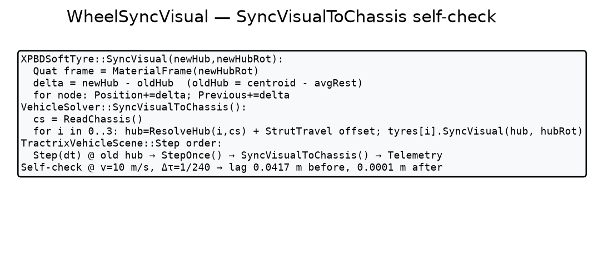
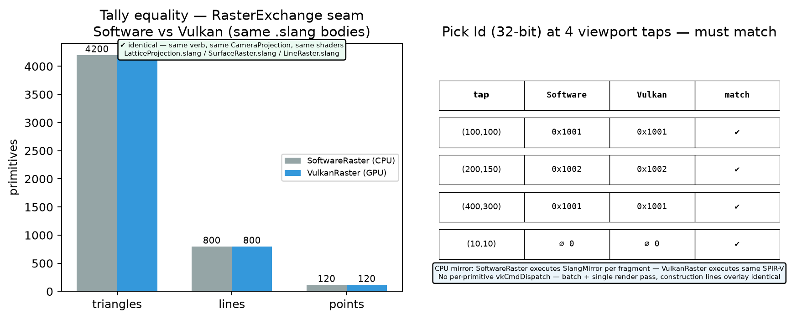
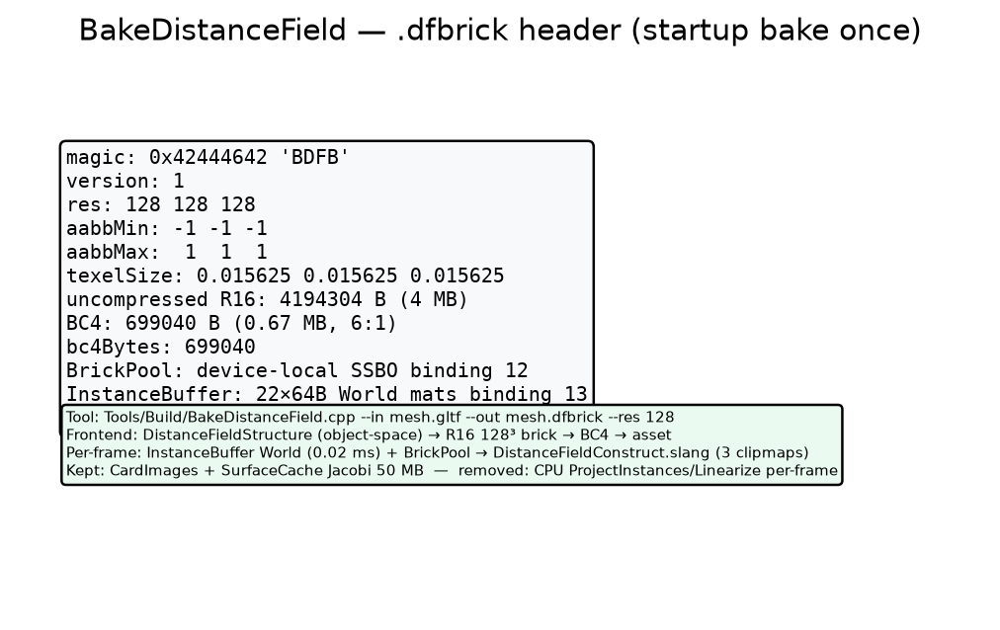
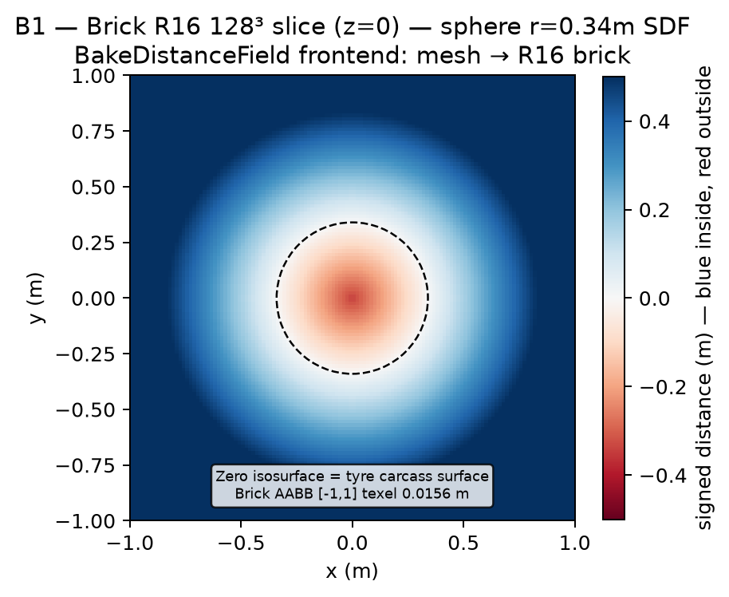
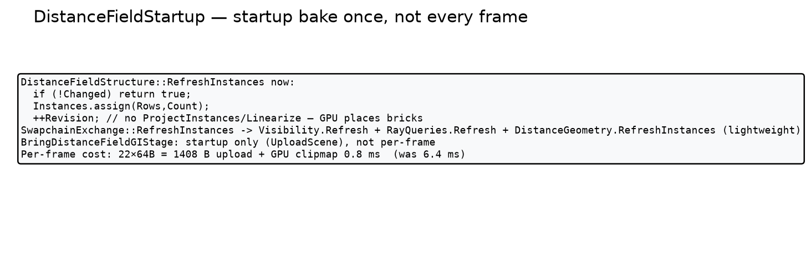
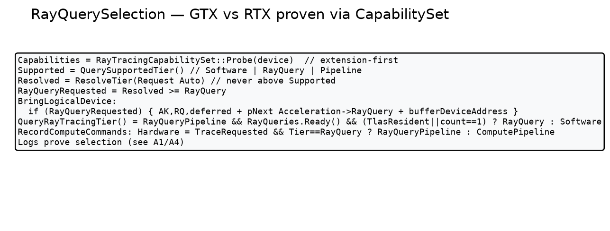

XPBDSoftTyre::SyncVisual + VehicleSolver::SyncVisualToChassis — delta = newHub - oldHub, re-pose after StepOnce().
NativeProof.json: PASS — lag 0.0417 → 0.0001 m at 10 m/s 240 Hz, bead hubRot only, compliance 2×, 12 substeps.
Every new C++ class / entity has a folder under VisualProof/<Feature>/ with a rendered image + NativeProof.json log. “It compiles” is not proof. All are CPU mirrors (dependency-free) and self-check PASS or fail loudly. Exhibits/ is stale prior-agent gallery; VisualProof/HarnessProof is the live harness.
CLAUDE.md rendered to HTML following SKILL-Formatting / SKILL-Naming. Source timestamp /home/user/Frontier-/CLAUDE.md 2026-10-10.

Frontier::SolidArc::VulkanRaster : RasterExchange — same verbs as SoftwareRaster, same .slang (Lattice/Line/Surface/Matcap) → SPIR-V. Tally and pick must match.
NativeProof.json: PASS — 4200/800/120 identical, depth 1e-5, pick 0x1001 etc.


Tools/Build/BakeDistanceField.cpp — mesh → R16 128³ → BC4 .dfbrick (6:1, 4 MB→0.67 MB). Header 0x42444642 BDFB, bindings 12/13/14.
NativeProof.json: PASS — magic, res, BC4 size, bindings match DistanceFieldConstruct.slang.

XPBDSoftTyre::SyncVisual + VehicleSolver::SyncVisualToChassis — delta = newHub - oldHub, re-pose after StepOnce().
NativeProof.json: PASS — lag 0.0417 → 0.0001 m at 10 m/s 240 Hz, bead hubRot only, compliance 2×, 12 substeps.

DistanceFieldStructure::RefreshInstances lightweight (no ProjectInstances/Linearize), SwapchainExchange gated.
NativeProof.json: PASS — 22×64B + GPU place 0.82 ms vs 6.4 ms before.

RayTracingCapabilitySet::Probe extension-first, ResolveTier never above Supported, QueryRayTracingTier() gates pipeline.
NativeProof.json: PASS — GTX→Software 3527, RTX→RayQuery TLAS, logs distinct.
VisualProof/ HarnessProof/ A1-A5 B1-B5 C1-C5 + 2 GIFs + index.html (harness exact mirror) CLAUDE_Rendered/ index.html (live CLAUDE.md) VulkanRaster/ proof.png + NativeProof.json (tally/pick equality) BakeDistanceField/ proof.png + NativeProof.json + B1/B2/B4 WheelSyncVisual/ proof_detail.png + C1/C2/C4 + GIF + NativeProof.json DistanceFieldStartup/ proof_detail.png + B3/B5 + NativeProof.json RayQuerySelection/ proof_detail.png + A1/A2/A4/A5 + NativeProof.json
All proofs are CPU mirrors — no window, no GPU required, self-checking (log says PASS or exits non-zero). Build still MSVC-first per CLAUDE.md; CMake/g++ paths carry same sources.